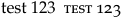

LuaTeX and Mark IV allow advanced usage and manipulation of Open Type open-type features. Some features, such as onum (oldstyle) and smcp (smallcaps) are known to most users of Open Type fonts, and virtually every open type font has default features for kerning (kern) and ligatures (liga). More advanced OT fonts can have lots more, including the Stylistic Set feature ss<nn> (where nn stands for any numeral between 01 and 99).
Contents
Features in general
In MkIV there are two kinds of font feature directly visible to the user: featureset and open-type feature.
Open-type features
The open-type features are specified in the font and are composed of individual "lookups" which specify each substitution and positioning action to be performed in the processing. These open-type features are plugged in and out of the "stack" of lookups to be processed in the MkIV open type handler. These features are represented by a 4-character name (onum, smcp, etc.) and in MkIV are associated with a keyval that turns it on ("yes") or off ("no"). For example, '[onum=yes]' turns on the lookup substitutions in the font which replace a line numeral with an oldstyle one. Here the key 'yes' means "include open-type feature onum into the processed stack"; the key 'no' means "do not include open-type feature onum in the processed stack".
Adding features on the fly
Sometimes you want to provisionally add OpenType features to a font. There are at least three ways to do this.
-
Use a low-level
font.handlers.otf.addfeaturecallback function to define new OTF features. See Section 8.14 of fonts-mkiv manual for details of the syntax, or refer to the examples here . -
Define the new features in an
lfg"goodies" file and load it with thegoodieskey. See this example with the corresponding lfg file. -
Use a feature file (in the
feaformat) and load it with thefeaturefilekey. See Fontfeaturefiles .
Debugging features
For an OpenType to work properly, all the relevant glyphs must come from the same font (either the original font or one of the fallbacks). For example, the font Mikhak now misses glyphs for en dash and em dash, hence the tlig feature does not work to automatically change double or triple dashes to en and em dashes. This would not work even if we added fallbacks for those two characters. However, if we also create a fallback for the dash character, then this will work.
\starttext \definefontfallback[myfallback][dejavuserif*default][0x02d,0x2013,0x2014][check=yes,force=yes] \definefontsynonym[mytestfont][file:Mikhak-Medium.ttf][fallbacks=myfallback] \definedfont[mytestfont*arabic] foo--ofo---oof [\char"002D] [\char"2013] [\char"2014] \stoptext
OpenType features can be complicated to understand or debug. One useful command to see how they are working is \showotfcomposition.
\starttext % -1 for the second argument means RTL. Leave it out for LTR text. \showotfcomposition{mikhak-medium*arabic}{-1}{سلام علیکم} \stoptext
Featuresets
A featureset is a composed of a set of open-type features. Featuresets are specified using \definefontfeature. For each given body font in the typeface we specify the global default set of open-type features to be used for that font. This is usually done in the preamble to our document, an environment file, or a typescript file, or the like.
For example, using TeX-Gyre Schola we can specify the following default, global set open-type features in the preamble:
\definefontfeature [schola-preset] [mode=node,script=latn,language=dflt,kern=yes,liga=yes,lnum=yes]
All other open-type features in the font are not included in the processing.
Now when we want to change the default, we use \definefontfeature to specify local featuresets. The command \feature and its siblings is then used to control the action of those featuresets. Here are the commands:
\addfeature [f:mine] \feature [more][f:mine] \feature[+][f:mine] \subtractfeature [f:mine] \feature [less][f:mine] \feature[-][f:mine] \replacefeature [f:mine] \feature [new][f:mine] \feature[=][f:mine] \resetandaddfeature[f:mine] \feature[local][f:mine] \feature[!][f:mine] \revivefeature [f:mine] \feature [old][f:mine] \feature[>] \resetfeature \feature[reset] \feature[<]
There are actually only six commands: Each row includes a set of three synonyms for one command.
Sample file with examples
Let us now go through a complete sample file with examples. Let us first define our global default featureset and activate it with a typescript:
\definefontfeature [schola-preset] [mode=node,script=latn,language=dflt,kern=yes,liga=yes,lnum=yes] \starttypescript [serif] [schola-preset] [name] \definefontsynonym [Serif] [name:texgyreschola-regular.otf][features=schola-preset] \stoptypescript \starttypescript [serif] [schola-preset] [size] \definebodyfont [35.8pt,29.8pt,24.8pt,20.7pt,17.3pt,14.4pt,12pt,11pt,10pt,9pt,8pt] [rm] [tf=Serif sa 1] \stoptypescript \starttypescript [schola-default] \definebodyfontenvironment [schola-default] [default] [interlinespace=2.7ex] \definetypeface [schola-default] [rm] [serif] [schola-preset] [schola-preset] % [default] \stoptypescript \usetypescript[schola-default] \setupbodyfont[schola-default,12pt]
In the above note that we start with just a global, default feature set of kerns, ligatures, and line numerals.
Now when we want to change the default, we use \definefontfeature to specify featuresets. The command \feature and its siblings is then used to control the action of those featuresets.
At this stage which open-type feature is being plugged into or unplugged from the stack is invisible to the user. We just speak in terms of featuresets. TeX-Gyre Schola has a decent set of open-type features. Using a few of them, let us set up a few featuresets:
\definefontfeature[f:smallcaps] [smcp=yes] \definefontfeature[f:thinimacron] [ss04=yes] \definefontfeature[f:upsidedown] [dlig=yes]
Above, all of our featuresets are mapped to open-type features that plug into the stack.
\definefontfeature[f:newstyle] [onum=no] \definefontfeature[f:nocaps] [smcp=no] \definefontfeature[f:wideimacron] [ss04=no] \definefontfeature[f:rightsideup] [dlig=no]
We can also be redundant to the default open-type feature set:
\definefontfeature[f:ligatures] [liga=yes] \definefontfeature[f:noligatures] [liga=no]
Of course, a featureset set can include more than one open-type feature. In advanced applications this will be the norm:
\definefontfeature[f:oldstyle] [onum=yes,lnum=no]
NOTE: In this case we have to specify 'lnum=no' because it is already defined in our default feature set in the preamble etc. The order of lookups in the font itself could conceivably have an impact as well.
\definefontfeature[f:oldstyleupsidedown] [onum=yes,dlig=yes] \definefontfeature[f:newstylerightsideup] [onum=no,dlig=no]
Above, each featureset is mapped to an open-type feature set that plugs into or unplugs from the stack. But we can mix things up:
\definefontfeature[f:oldstylewmacron] [ss04=no,onum=yes] \definefontfeature[f:newstylesmallcaps] [smcp=yes,onum=no]
The above two illustrate the point that featuresets hide from the user which actual open-type features are being plugged into or unplugged from the stack.
Now let's put some of the above featuresets in action. Note the use of synonyms in both the activated code and in the comments:
\definefontfeature [schola-preset] [mode=node,script=latn,language=dflt,kern=yes,liga=yes,lnum=yes] \starttypescript [serif] [schola-preset] [name] \definefontsynonym [Serif] [name:texgyreschola-regular.otf][features=schola-preset] \stoptypescript \starttypescript [serif] [schola-preset] [size] \definebodyfont [35.8pt,29.8pt,24.8pt,20.7pt,17.3pt,14.4pt,12pt,11pt,10pt,9pt,8pt] [rm] [tf=Serif sa 1] \stoptypescript \starttypescript [schola-default] \definebodyfontenvironment [schola-default] [default] [interlinespace=2.7ex] \definetypeface [schola-default] [rm] [serif] [schola-preset] [schola-preset] % [default] \stoptypescript \usetypescript[schola-default] \setupbodyfont[schola-default,12pt] \definefontfeature[f:smallcaps] [smcp=yes] \definefontfeature[f:thinimacron] [ss04=yes] \definefontfeature[f:upsidedown] [dlig=yes] \definefontfeature[f:newstyle] [onum=no] \definefontfeature[f:nocaps] [smcp=no] \definefontfeature[f:wideimacron] [ss04=no] \definefontfeature[f:rightsideup] [dlig=no] \definefontfeature[f:ligatures] [liga=yes] \definefontfeature[f:noligatures] [liga=no] \definefontfeature[f:oldstyle] [onum=yes,lnum=no] \definefontfeature[f:oldstyleupsidedown] [onum=yes,dlig=yes] \definefontfeature[f:newstylerightsideup] [onum=no,dlig=no] \definefontfeature[f:oldstylewmacron] [ss04=no,onum=yes] \definefontfeature[f:newstylesmallcaps] [smcp=yes,onum=no] \defineparagraphs[X][n=2, rule=on, width=10cm] \startTEXpage[offset=10pt] \define\SAMPLE{123 Idrīs ?` !` VA fi} \startX A) \SAMPLE\blank \feature[+][f:oldstyle] B) \SAMPLE \blank \feature[more][f:thinimacron] C) \SAMPLE \blank \addfeature[f:upsidedown] D) \SAMPLE \blank \feature[+][f:smallcaps] E) \SAMPLE \blank \nextX \addfeature[f:wideimacron] F) \SAMPLE \blank \feature[-][f:upsidedown] G) \SAMPLE \blank \feature[=][f:oldstyleupsidedown] H) \SAMPLE \blank \feature[!][f:smallcaps] I) \SAMPLE \blank \feature[<] J) \SAMPLE \blank \stopX \stopTEXpage
Now let us review the results:
{kind=link}
Finally, we can mix featuresets using comma-separated lists. Here is an example:
-
\setupbodyfont[pagella] test 123 {\feature[+][smallcaps,oldstyle] test 123}
- 
You will also note that context already has some common featuresets predefined.
Note
An earlier version of this functionality was contained in the commands
\addff{featureset} % Add absolute font-feature set -- replaces default set \subff{featureset} % Subtract absolute font-feature set -- replaces default set \addfs{featureset} % Add font-feature set on top of current stack \subfs{featureset} % Subtract font-feature set from current stack
These have now been deprecated and, presumably, will eventually disappear.
List of syntax for OpenType features
-
Ligatures
-
Common/standard ligatures
liga -
Contextual alternates
calt -
Discretionary ligatures
dlig
-
Common/standard ligatures
-
Letters
-
Small caps
smcp -
Capitals to small caps
c2sc -
Swashes
swsh -
Stylistic alternates
salt
-
Small caps
-
Numbers
-
Lining figures
lnum -
Oldstyle figures
onum -
Proportional figures
pnum -
Tabular figures
tnum -
Fractions
frac -
Ordinals
ordn
-
Lining figures
-
Stylistic sets
-
Stylistic sets 01–20
ss##
-
Stylistic sets 01–20
-
East Asian script
-
Width variants
-
Proportional Widths
pwid -
Proportional Alternate Widths
palt -
Proportional Kana
pkna -
Full Widths
fwid -
Half Widths
hwid -
Alternate Half Widths
halt -
Third Widths
twid -
Quarter Widths
qwid
-
Proportional Widths
-
Cultural variants
-
JIS78 Forms
jp78 -
JIS83 Forms
jp83 -
JIS90 Forms
jp90 -
JIS2004 Forms
jp04 -
Traditional Forms
trad -
Ruby Notation Forms
ruby -
Horizontal Kana Alternates
hkna -
NLC Kanji Forms
nlck -
Alternate Annotation Forms
nalt -
Italics
ital
-
JIS78 Forms
-
Vertical features
-
Vertical Kerning
vkrn -
Vertical Alternates
vert -
Proportional Alternate Vertical Metrics
vpal -
Alternate Vertical Half Metrics
vhal -
Vertical Kana Alternates
vkna
-
Vertical Kerning
-
Width variants
Ligatures
A wiki page is dedicated to Ligatures
| TODO: check consistency and duplicates between here and Ligatures (See: To-Do List) |
Introduction
Ligatures are combinations of letters that use different glyph shapes to avoid clashing of parts like i-dots and f-arcs. Many fonts contain at least fi and fl ligatures, well-furnished fonts have also ft, ffl, ffi, fft, fb, ffb, fh, ffh and maybe some traditional ones like st, sp, ct, ch and combinations with long s – German ß was originally a long-s + end-s ligature (even if it looks like s+z and is called szlig).
While the use of ligatures is a feature of good typography, there are places where they don’t belong, namely at syllable seams where hyphenation can or should take place.
Some typical German examples are Auf-lage, auf-laden, auf-fallen, Zupf-instrument, Schiff-fahrt. English examples would be chief-ly, shelf-ful, elf-like, wolf-trap, clothes-pin.
Traditional TeX methods to break ligatures
- Auf\/lage – breaks the ligature, but also kills hyphenation and kerning
- Auf{}lage – worked in pdfTeX (MkII), but not in modern TeX engines
- For LaTeX, there’s the selnolig package (English and German).
Enabling Ligatures in fonts
Ligatures in OpenType fonts are defined via "features" that you can/must enable. Usual ligature features are liga and tlig, but some fonts my have others for more/exotic ligatures. Here’s an example for a good set of default features:
\definefontfeature[default] [mode=node,kern=yes, liga=yes,tlig=yes, ccmp=yes,language=dflt, protrusion=quality, expansion=quality]
The other way round – if you don’t enable ligatures in your font features, you won’t get any; this might be desirable for mono width (typewriter) fonts.
Single places
If you only want to fix a few occurrences, you can use \noligature. Compare:
Auflage Zupfinstrument Au\noligature{fl}age Zup\noligature{fi}nstrument
Replacements
ConTeXt has a method of replacing words that you can use for ligature exception dictionaries:
\mainlanguage[de] \definefontfeature[default] [mode=node,liga=yes,kern=yes,tlig=yes, ccmp=yes,language=dflt, protrusion=quality, expansion=quality] \replaceword[eg][Auflage][Au{fl}age] \replaceword[eg][Zupfinstrument][Zup{fi}nstrument] \starttext Auflage Zupfinstrument \setreplacements[eg] Auflage Zupfinstrument \stoptext
Much better. The first parameter os \replaceword is a set (collection) keycode, i.e. you can define different sets of replacements and activate them with \setreplacements.
Here’s a list of German ligature exceptions, derived from selnolig LaTeX package. Just \input it in your environment.
In current versions (after 2017-09-28) you may also define several exceptions at once, like
\replaceword [eg] [Au{fl}age Schiff{f}ahrt Zup{fi}nstrument]
Find more details in the source: lang-rep.mkiv
Blocking
You can also define blocking of ligatures as a font feature:
\blockligatures[fi,ff] \blockligatures[fl] \blockligatures[au:fl:age] \definefontfeature[default:nolig][default][blockligatures=yes] \definedfont[Serif*default:nolig] % no ligatures fi ff fl Auflage Zupfinstrument \definedfont[Serif*default] % yes ligatures fi ff fl Auflage Zupfinstrument
While general blocking (\blockligatures[fi,fl]) works, the exception handling (\blockligatures[au:fl:age]) might depend on a version unpublished as of this writing (i.e. after 2017-09-28).
Word suppression
In English, one principle suggests not using specific ligatures in certain words because ligatures should not cross morpheme boundaries. For instance, the fi ligature in wolfish is to be suppressed because the f and i belong to distinct morphemes (wolf and ish, in contrast to fish, where fi is a single morpheme). The following code shows how to apply this rule to prevent unwanted ligatures:
\setuplanguage[en][goodies={lang-en.llg}] \starttext wolfish huffily puffily \stoptext
Other languages will need a corresponding ligature suppression word list.